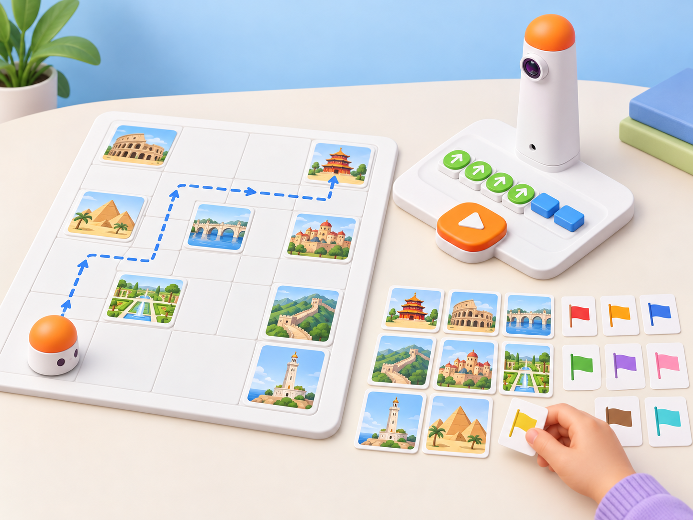

Patrimoni en ruta
🏷️ La Llotja i el patrimoni del món
🌱 Situació, repte i intenció
La situació adapta la targeta oficial C-1 · Culture Differences de les Coding Activity Cards: preparar targetes de banderes de països i nou targetes de monuments corresponents, triar inici i bandera, programar MatataBot fins al monument d’eixe país sense tocar les altres targetes, i puntuar cada destinació correcta; l’ampliació demana programar dues destinacions amb un únic programa. Ací substituïm la puntuació individual per una missió cooperativa: la classe completa una ruta de patrimoni i justifica les associacions amb fonts.
La Llotja de la Seda de València dona un punt de partida local; les altres parelles de targetes es preparen amb informació verificada, no amb estereotips ni per l’aparença d’un edifici.
MatataBot no reconeix banderes ni monuments i no detecta targetes. Les persones llegeixen la font, identifiquen la destinació, planifiquen el recorregut i comproven si el robot hi arriba sense contacte.
🎯 Aprenentatges i vocabulari
- Buscar i verificar una relació geogràfica entre un país i un lloc patrimonial.
- Distingir una dada amb font d’una associació feta només per aparença o familiaritat.
- Llegir una graella i planificar una ruta amb inici, orientació i destinació.
- Programar una ruta que evite targetes no seleccionades i corregir-la després d’una prova.
- Ampliar el recorregut a dues destinacions amb un únic programa.
- Explicar que el reconeixement de targetes i la selecció del lloc són accions humanes.
Vocabulari clau: patrimoni, país, font, targeta, graella, ruta, destinació, orientació, seqüència, contacte, verificació.
🧰 Materials i preparació
- Coding Set de la dotació: MatataBot, torre de control, tauler i blocs direccionals disponibles.
- Mapa pla en quadrícula amb nou caselles de destinació i espai per a la ruta; useu la graella física del kit si el centre en disposa i comproveu-ne l’escala.
- Nou targetes grans amb imatges de llocs patrimonials i nou targetes separades de país. Incloeu La Llotja de la Seda de València i seleccioneu les altres huit destinacions des de fonts fiables; una persona adulta revisa les correspondències i apunta l’URL o la referència al revers.
- Fitxa de registre amb país triat, lloc seleccionat, font consultada, inici/orientació, ruta, targetes evitades, resultat i revisió.
- Fitxa de robot i fletxes per a simular; targetes de suport amb noms de llocs i països en lletra gran, lectura fàcil i transcripció oral.
Useu la Llista del Patrimoni Mundial de la UNESCO per a verificar denominació i país de cada lloc; contrasteu també la fitxa individual del lloc abans de crear cada parella. Per al punt local, la pàgina oficial de La Llotja de la Seda de València identifica el lloc i els materials oficials en descriuen l’ús històric com a centre de comerç de la seda. No copieu mapes, fotografies o logos protegits a les targetes sense comprovar-ne la llicència;
feu il·lustracions esquemàtiques pròpies o useu materials amb llicència adequada.
Carregueu i proveu la torre i el robot. Fixeu les targetes de destinació al centre de les caselles, deixeu passadissos prou amplis i comproveu una ruta de prova que passe entre dues targetes sense tocar-les. La selecció del país i la identificació del lloc es fan abans de programar; no useu la càmera de la torre com si llegira les imatges del mapa.
📅 Seqüència didàctica
Verifiquem les parelles de targetes (45 min)
Fase 1 · Activem i prediem
Mostreu la Llotja de la Seda i pregunteu què podem afirmar sobre el lloc i què necessitem comprovar. Compareu una targeta amb una imatge sense nom i una fitxa de font amb país i denominació oficial. Acordeu que l’aspecte d’un edifici no és evidència suficient per a identificar-ne el país.
Fase 2 · Explorem i construïm
En equips, reviseu les nou parelles de país i lloc preparades per la docent. Busqueu el nom del lloc en la Llista del Patrimoni Mundial o en la seua fitxa i anoteu la font al revers. Si la targeta és ambigua o la font no confirma la correspondència, poseu-la en una pila pendent i substituïu-la per una parella verificable.
Fase 3 · Expliquem i registrem
Creeu un inventari amb tres columnes: país de la targeta, nom del lloc i font. Cada equip explica una relació amb una dada consultada, evitant generalitzacions sobre les persones o la cultura d’un país. L’equip que escolta comprova que la targeta no confon el lloc, l’estat o una regió.
Fase 4 · Apliquem i millorem
Barregeu les targetes i intercanvieu-les amb un altre equip. La parella visitant intenta reconstruir les nou associacions a partir de les fonts del revers. Si no pot verificar-ne una, l’equip autor revisa l’etiqueta o l’enllaç; no es tracta com un error de memòria de l’alumnat.
Fase 5 · Comprovem i reflexionem
Programem una destinació sense tocar les altres (45 min)
Fase 1 · Activem i prediem
Col·loqueu MatataBot en una casella inicial i trieu una targeta de país. La parella localitza el lloc corresponent i marca una ruta que no passe per damunt de les altres targetes. Predigueu cada casella abans d’usar els blocs.
Fase 2 · Explorem i construïm
Traduïu la ruta a blocs direccionals, tenint en compte l’orientació del robot i el fet que girar no equival a avançar de costat. Simuleu-la amb una fitxa de paper; si la ruta toca una altra targeta, trieu un passadís alternatiu abans de programar.
Fase 3 · Expliquem i registrem
Anoteu el país triat, el nom del lloc, la font, l’inici, l’orientació i la seqüència. Una persona llig les ordres i l’altra assenyala la trajectòria. L’observadora marca quines targetes no seleccionades cal evitar.
Fase 4 · Apliquem i millorem
Executeu la ruta. Comproveu si el robot arriba a la casella correcta i si ha mantingut distància de les altres targetes. Si toca una imatge, atureu-lo i registreu el punt de contacte; reviseu una sola instrucció i repetiu des del mateix inici. No retireu ni mogueu targetes durant l’execució.
Fase 5 · Comprovem i reflexionem
Dues destinacions en un sol programa (45 min)
Fase 1 · Activem i prediem
Trieu dues targetes de país i localitzeu-ne els dos llocs amb les fonts. Predigueu quin ordre visitarà MatataBot i com tornarà a orientar-se entre les destinacions sense tocar altres targetes.
Fase 2 · Explorem i construïm
Prepareu un programa únic que passe primer per una destinació i després per l’altra. Simuleu tota la seqüència en paper i marqueu un punt d’aturada segur després de la segona arribada; no dividiu el repte en dos programes executats per separat.
Fase 3 · Expliquem i registrem
Una parella visitant revisa la ruta i comprova que les dues destinacions s’ajusten a les fonts consultades i que cap altre lloc queda en la trajectòria. Escriviu país 1 → lloc 1 → país 2 → lloc 2 al registre i anoteu l’ordre exacte dels blocs.
Fase 4 · Apliquem i millorem
Executeu el programa complet amb les dues destinacions. Registreu si MatataBot arriba a cadascuna i si toca alguna targeta no seleccionada. Si la ruta no funciona, localitzeu l’última casella correcta, reviseu el tram següent i torneu a executar des de l’inici.
Fase 5 · Comprovem i reflexionem
Evidència final: dues fonts verificades, un programa únic, dos llocs visitats i una nota sobre una revisió. Tanqueu amb: «La font confirma…» i «MatataBot només ha executat…».
🧪 Evidències i avaluació
Recolliu l’inventari de nou parelles, fonts consultades, dos mapes de ruta, programes i registres de prova. Observeu si l’alumnat:
- comprova la correspondència abans de programar;
- marca orientació i ruta completa abans d’executar;
- evita targetes no seleccionades en una o dues destinacions;
- fa servir una sola seqüència quan programa dues arribades;
- identifica si una font és insuficient i demana verificar-la;
- distingeix associació humana i moviment programat.
No hi ha rànquing ni puntuació individual. No avalueu coneixements previs sobre països, velocitat o nombre d’encerts al primer intent.
♿ Participació, accessibilitat i seguretat
Oferiu versions amb noms grans, descripció oral, relleu o pictogrames i mapes d’alt contrast. Les fonts es poden llegir en veu alta, consultar en grup o preparar prèviament; ningú ha de compartir experiències familiars ni representar una cultura. Roteu rols de consulta, verificació, programació i observació. Fixeu les targetes i manteniu les mans fora del recorregut; atureu el robot abans de reposicionar qualsevol material. Tracteu cada lloc amb respecte, sense caricatures ni associacions basades només en color, vestimenta o arquitectura.
🔗 Referents i adaptació
- Matatalab, Coding Activity Cards, targeta C-1 · Culture Differences (PDF oficial): prepara targetes de banderes i nou targetes de llocs corresponents; demana triar inici i bandera, trobar el monument sense tocar les altres targetes, puntuar cada encert i ampliar el repte a dues destinacions amb un únic programa. La mostra és parcial, però aquesta targeta inclou les instruccions llegibles.
- UNESCO World Heritage Centre, Llista del Patrimoni Mundial: consulta primària per a verificar denominació i país dels llocs seleccionats.
- UNESCO World Heritage Centre, La Llotja de la Seda de València i fitxa del Taj Mahal: exemples de referències oficials per a construir parelles locals i internacionals.
La proposta conserva la mecànica de relacionar una bandera amb un lloc, evitar altres targetes i visitar dos llocs amb una sola seqüència. Canvia la competició per una missió cooperativa, incorpora verificació de fonts, inclou patrimoni valencià i evita atribuir al MatataBot lectura d’imatges, interpretació cultural o detecció d’obstacles.